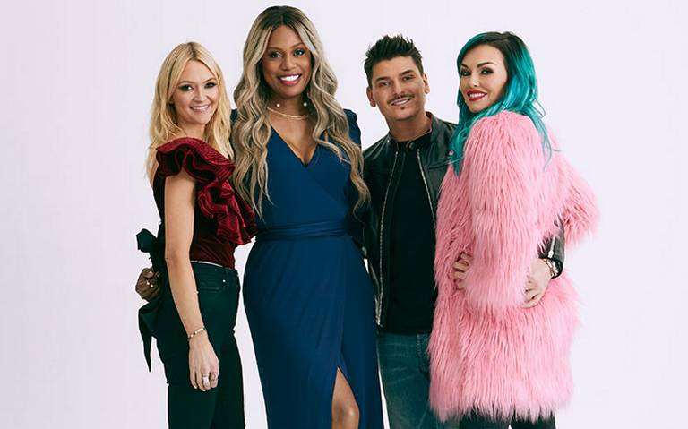

Llega a la pantalla, un programa de competencia entre reconocidos
influencers y amantes de la belleza

Este es un programa donde influencers compiten realizando diferentes desafios
donde estan a prueba sus habilidades con las brochas de maquillaje por lo que
es importante prestar atención a los jueces donde se muestre todo ese glamour
en una sola selfie por lo que debe tomarse desde su mejor ángulo para asi
obtener la mejor foto de todas donde haga lucir todos sus atributos que se
haga enfasis en las mejores cualidades de cada persona debido a que es mejor
centrarse de acuerdo al tiempo donde no se deben sobrepasar de lo que se tiene
contemplar para obtener el mejor resultado.
En este programa elegirán varios tipos de tendencia donde se llevaran a cabo
por medio de varios trucos y todo a base de maquillaje donde se vea todas sus
habilidades por lo que se por lo que se requiere iniciar un proceso desde
preparar la piel, utilizar base de maquillaje, polvos traslúcidos, fijador,
etc.